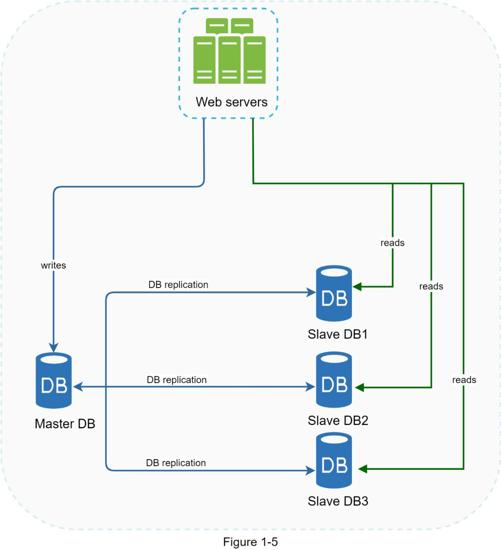
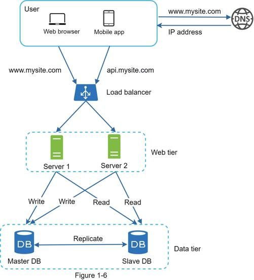

Quoted from Wikipedia: “Database replication can be used in many database management systems, usually with a master/slave relationship between the original (master) and the copies (slaves)” [3].
A master database generally only supports write operations. A slave database gets copies of the data from the master database and only supports read operations. All the data-modifying commands like insert, delete, or update must be sent to the master database. Most applications require a much higher ratio of reads to writes; thus, the number of slave databases in a system is usually larger than the number of master databases. Figure 1-5 shows a master database with multiple slave databases.

Advantages of database replication:
•Better performance: In the master-slave model, all writes and updates happen in master nodes; whereas, read operations are distributed across slave nodes. This model improves performance because it allows more queries to be processed in parallel.
•Reliability: If one of your database servers is destroyed by a natural disaster, such as a typhoon or an earthquake, data is still preserved. You do not need to worry about data loss because data is replicated across multiple locations.
•High availability: By replicating data across different locations, your website remains in operation even if a database is offline as you can access data stored in another database server.
In the previous section, we discussed how a load balancer helped to improve system availability. We ask the same question here: what if one of the databases goes offline? The architectural design discussed in Figure 1-5 can handle this case:
•If only one slave database is available and it goes offline, read operations will be directed to the master database temporarily. As soon as the issue is found, a new slave database will replace the old one. In case multiple slave databases are available, read operations are redirected to other healthy slave databases. A new database server will replace the old one.
•If the master database goes offline, a slave database will be promoted to be the new master. All the database operations will be temporarily executed on the new master database. A new slave database will replace the old one for data replication immediately. In production systems, promoting a new master is more complicated as the data in a slave database might not be up to date. The missing data needs to be updated by running data recovery scripts. Although some other replication methods like multi-masters and circular replication could help, those setups are more complicated; and their discussions are beyond the scope of this book. Interested readers should refer to the listed reference materials [4] [5].
Figure 1-6 shows the system design after adding the load balancer and database replication.

Let us take a look at the design:
•A user gets the IP address of the load balancer from DNS.
•A user connects the load balancer with this IP address.
•The HTTP request is routed to either Server 1 or Server 2.
•A web server reads user data from a slave database.
•A web server routes any data-modifying operations to the master database. This includes write, update, and delete operations.
Now, you have a solid understanding of the web and data tiers, it is time to improve the load/response time. This can be done by adding a cache layer and shifting static content (JavaScript/CSS/image/video files) to the content delivery network (CDN).